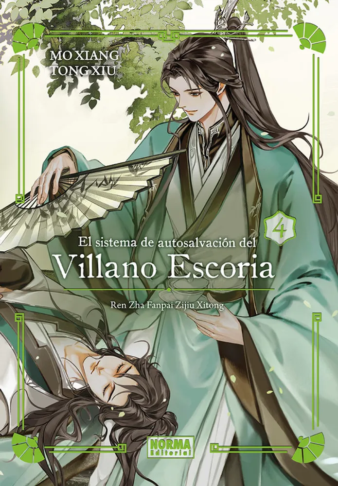

"¡Ya no puedo leer correctamente las novelas de sementales!"
Shen Yuan transmigró en alguien que había atormentado al joven protagonista casi hasta la muerte, el villano escoria Shen Qingqiu.
Debe saberse que el Shen Qingqiu original terminó siendo tallado vivo por su discípulo, Luo Binghe, en un palo humano, ¡un palo humano!
Diez mil "f * ck your moms" arrasaron el corazón de Shen Qingqiu:
“No es que no quiera aferrarme a los muslos del protagonista masculino, sino quién lo hizo tan jodidamente negro. ¡El tipo que busca una retribución mil veces mayor!”
¿Por qué todas las escenas de la protagonista femenina le han sido entregadas a la fuerza?
¿Por qué, como villano escoria, necesita sacrificarse constantemente, bloqueando el cuchillo y la pistola para el protagonista?
Shen Qingqiu: "... Creo que todavía puedo salvarlo, una vez más".